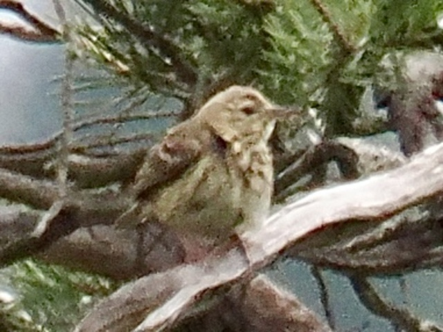
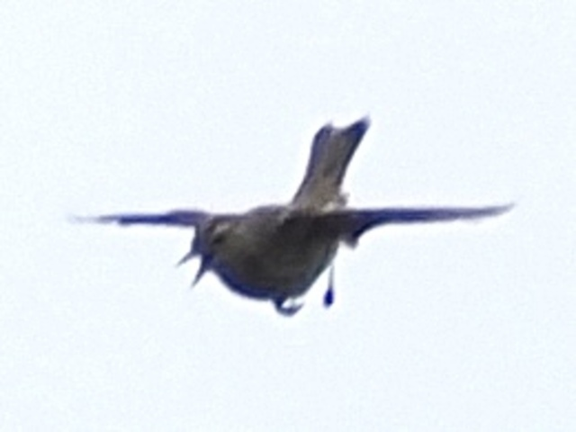

Tree Pipit
Anthus trivialis
Order: Passeriformes
Family: Motacillidae

A brownish pipit with some greeen and yellow tones. The name trivialis describes this bird as common or ordinary. Found in open habitats, such as heathland next to open woodlands.

Gives a display flight, somewhat like Skylark, in which the bird sings and flies high, then glides back down.